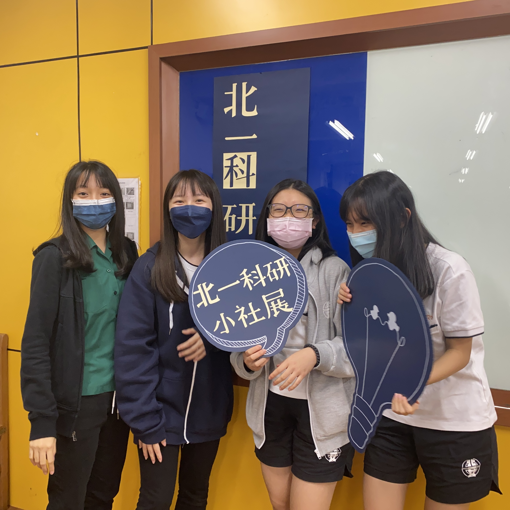

科學研習社

大社展
社展是一整年在科研裡學術成長的展現，這也是學妹們在科研自己辦的第一個活動，目標為利用此次三社聯合舉辦的社展，使社員們能夠有機會與來自各縣市的友社同學進行科學知識的切磋、學術研究能力等科學素養的交流，並加以精進、活用，提供三社學生透過這段準備與實際講解展版的過程，以行動展現對學習的熱忱；並使其發揮科學研究能力和認真向學的決心，從操作中學習、觀摩、研討、互助，拓展視野，以本次活動作為高中與未來研究生涯之銜接，培養具有前瞻性的科學人才。

秋遊
增進北一女中、師大附中、景美女中高一新生對自然科學的興趣以抱有對科學研究的熱忱，並藉由校系參訪和實作學習等方式學習科學新知、認識大學科系、探索自身興趣和刺激思考，且在與同儕互相討論和一起學習中培養溝通的能力，同時讓新生們了解科學研習社之社團宗旨在於知識探究的精神與喜愛以及人際間的交流，為高一生活留下一個璀璨的回憶。 ，此唯一一個在學期間的過夜活動，時間是兩天一夜在清大！可以為學期中注入能量和活力。

小社展
每兩人一組，講20分鐘，以簡報展現，主題可從人文、數學、物理、化學、地科、生物種選一個科目做主題短講，從準備主題及講稿到開始製作簡報過程間還要給學姊驗課，是加入科研後第一個學術交流活動。

元旦晚會
當天晚上有解謎活動、煮湯圓及大地活動，此次活動是由我負責的，負責其中構思大地遊戲、吃湯圓環節及整體流程設計，雖然是只是三小時的活動，但籌辦過程中的辛苦即大功告成後的成就感卻也是無與倫比的。